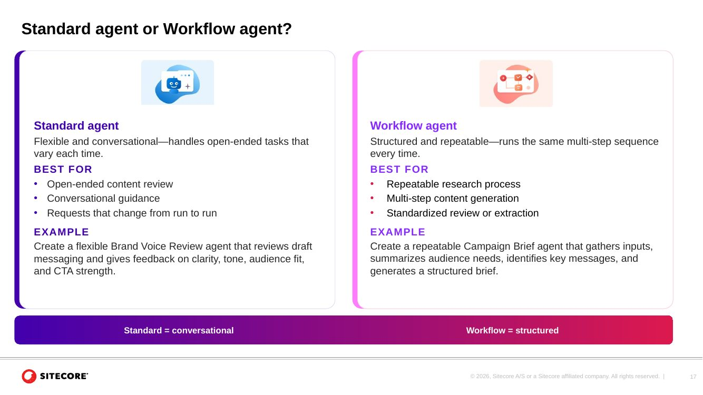
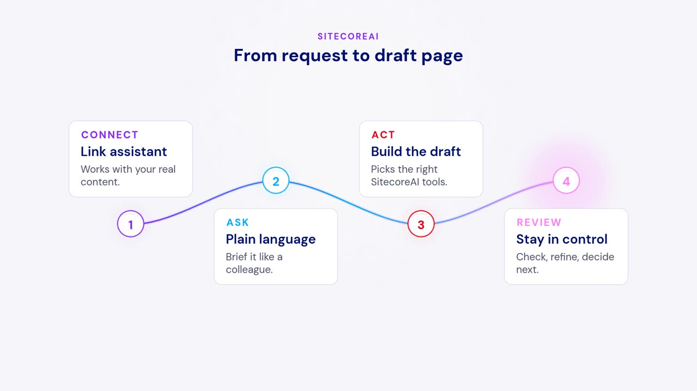
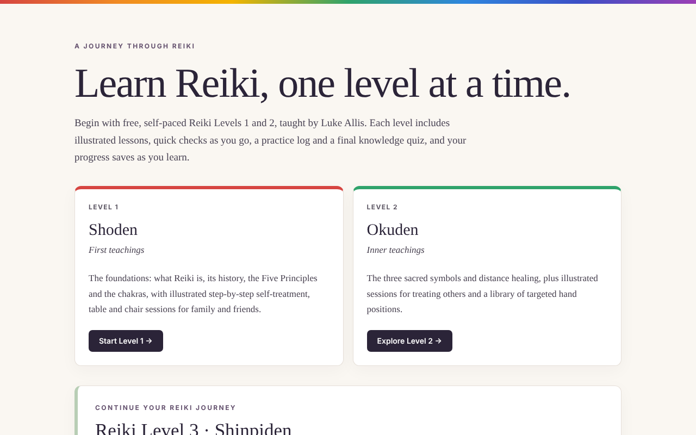
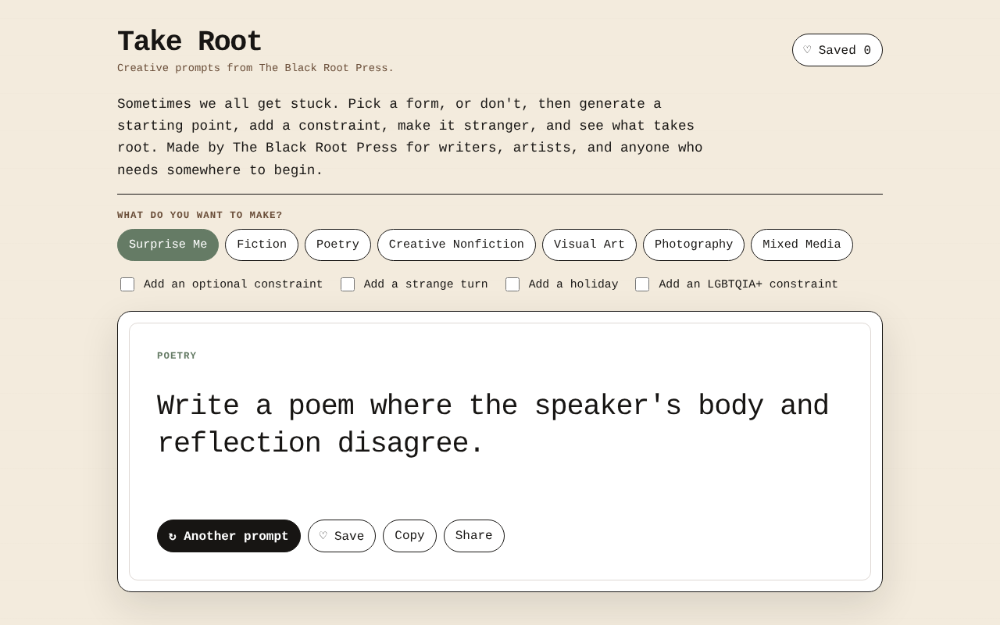
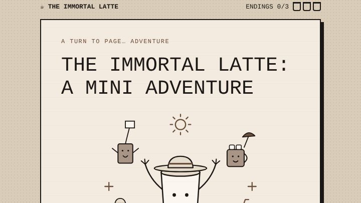

Instructional Designer · Curriculum Program Manager · Portland, OR
Learning that
takes root.
I design and lead learning and certification programs for global audiences, including eLearning, instructor-led training, video, and job aids, for teams at Sitecore, Google, Amazon, and PG&E.
Selected work
Portfolio
01Corporate learning · SitecoreAI

SitecoreAI Agent Builder Workshop
A five-hour virtual workshop where learners choose, build, test, and refine AI agents, with a full facilitator guide behind every slide.
view project →
Create a Page with an AI Assistant
A three-minute SitecoreAI tutorial built around a simple four-step model: connect, ask, act, review.
watch video →Introduction to SitecoreAI
A short orientation video for Sitecore learners, made with an AI presenter so it can be updated and localized as fast as the product changes.
watch video →02Independent projects

Learn Reiki: Levels 1 & 2
Two free self-paced courses with illustrated lessons, quick checks, a practice log, a final quiz, and progress that saves and moves across devices.
view courses ↗
Take Root: Creative Prompt Generator
A self-directed tool that helps stuck writers and artists start, with layered challenges that learners choose for themselves.
view project →
Turn to Page… Interactive Stories
Four short branching stories with two or three endings each, hand-drawn illustrations, and an endings tracker that invites learners to explore every path.
play the stories ↗Where I've done it
Experience
-
Sitecore2021 – Present
Curriculum Program Manager
I lead a global team of technical trainers and learning experience designers, and I own Sitecore's certification and credentialing programs from start to finish. I use agile delivery, learner data, and AI-enabled workflows to speed up content development, localization, and assessment creation without lowering instructional quality.
-
Synergis2020 – 2022
Learning & Development Program Consultant
I designed and led global learning programs for clients including Google Play Academy, with eLearning and instructor-led curricula for policy, marketing, and technology audiences in 50+ countries.
-
Amazon2020 – 2021
Contract Instructional Designer
I designed and revamped ILT and eLearning for field technicians who service the technology inside Amazon Go stores.
-
Google2018 – 2020
Instructional Designer
I turned a five-day in-person vendor management training into a series of self-paced, interactive modules on an industry-recognized certification pathway, and I supported Google's rapid global COVID-19 training and communications.
-
PG&E Academy2017 – 2018
Instructional Designer
I built a new Storyline template for contractor onboarding, modernized safety courses with mobile delivery and microlearning, and became the team's go-to Storyline expert.
Earlier: Google Data Centers (technical writing & courses) · Hitachi (technical training) · Comcourse (online course design & faculty training)
About
Hello, I'm Luke
I'm an instructional designer and curriculum program manager who builds learning that holds up in the real world. I've spent more than a decade turning complex products, processes, and source material into training people can actually use, from excavator maintenance to data center tools to cloud software certification.
Most of my work starts with listening to subject-matter experts and learners. From there I pick the right format, prototype quickly, and keep improving the program based on learner feedback, performance data, and product changes.
Contact
Let's make something
I'm open to instructional design and learning leadership roles. If you have learners who need something better, I'd love to hear about it.
luke.allis14@gmail.com